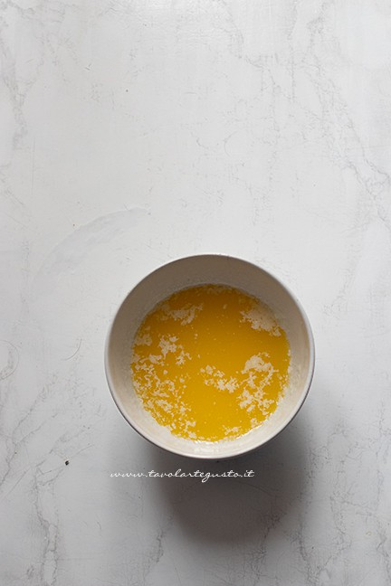
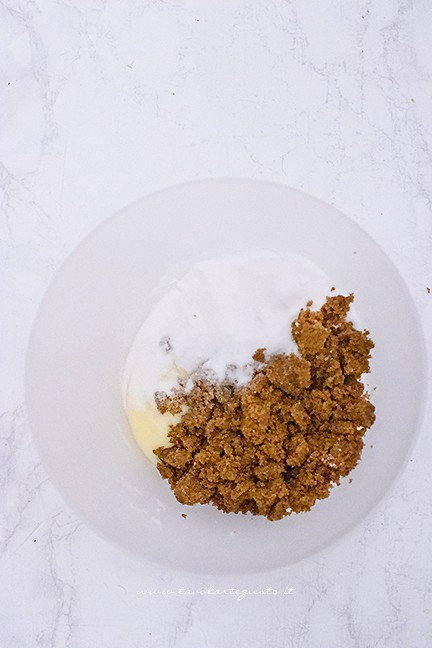
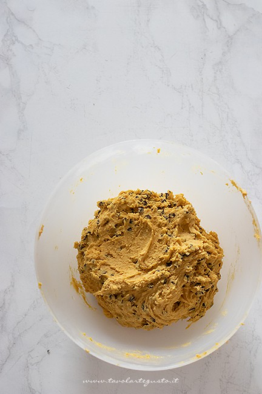
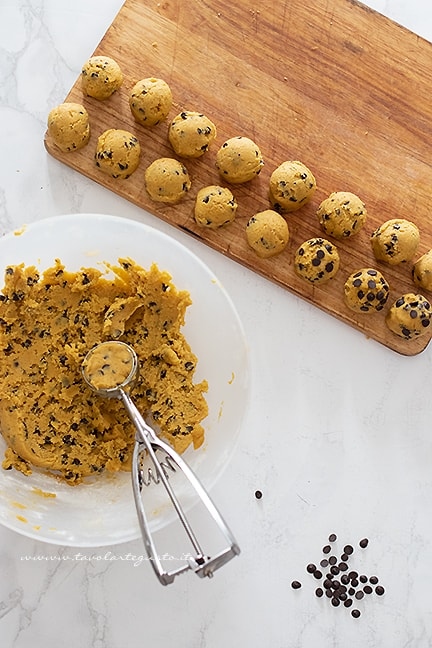
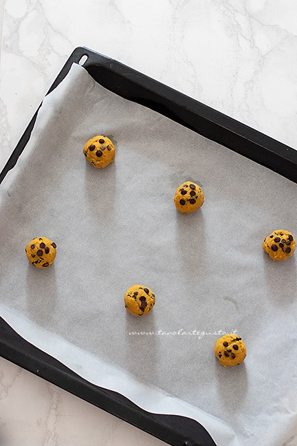
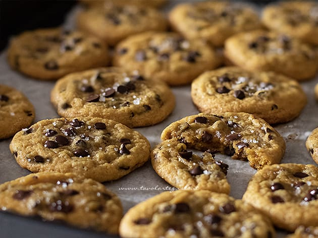

Una bontà irresistibile nata per caso negli anni ’30 grazie alla signora Ruth, la padrona dell’albergo
“Toll House Inn”.
Quel giorno la donna aveva terminato il cacao in polvere che utilizzava per preparare
i suoi biscotti al burro; così aggiunse all’impasto del cioccolato tritato immaginando che si sarebbe sciolto.
Ma pezzi di cioccolato rimasero intatti. E quando i clienti assaggiarono i nuovi Cookies ne rimasero entusiasti.
Fu così che in breve tempo, i Cookies con gocce di cioccolato divennero i Biscotti più famosi d’America e uno dei simboli
della pasticceria americana nel mondo.
Ricetta
| Difficoltà | Media |
| Tempo di preparazione | 30 Minuti(+ tempi di raffreddamento) |
| Tempo di cottura | 12 Minuti |
| Porzioni | 45 Pezzi |
| Metodo di cottura | Forno |
| Cucina | Americana |
Ingredienti
Per l'impasto
- 350g Farina 00
- 150g Zucchero bianco semolato
- 190g Burro
- un pizzico di Sale
- 2 Uova
- 1 cucchiaio di Estratto di vaniglia
- Sale in fiocchi per guarnire
- 200g Gocce di cioccolato
- 200g Brown sugar (oppure zucchero di canna grezzo di alta qualità)
- 1 cucchiaino colmo di Bicarbonato di sodio
Preparazione dei Cookies
Impasto
Prima di tutto sciogliete il burro a bagnomaria e lasciatelo completamente raffreddare (se avete tempo
a temperatura ambiente, finchè non ritorna ad uno stato cremoso.
Se avete fretta, ponetelo 20 min in frigo,
girando di tanto in tanto, affinchè non diventi un pezzo unico ma cremoso).
Poi in una ciotola grande versate il burro cremoso, il brown sugar e lo zucchero bianco.
Montate con le fruste elettriche e aggiungete anche il sale e la vaniglia. Dovrete ottenere un composto cremoso, uniforme,
lo zucchero deve sciogliersi e non risultare in grani.
Aggiungete quindi le uova una alla volta e montate sempre ad alta velocità. Aggiungete il bicarbonato e montate bene finchè non otterrete un composto spumoso.


Infine aggiungete la farina e le gocce di cioccolato.
Mescolate questa volta con una spatola, al fine di ottenere un impasto omogeneo. Ecco pronto l’impasto dei cookies americani.
Coprite con una pellicola e lasciate riposare in frigo per almeno 2 h
nella parte bassa più fredda. Se volete potete lasciarlo anche più a lungo o tutta la notte.

Formare i Cookies
Trascorso il tempo indicato, l’impasto sarà diventato più solido e duro. Staccate delle palline con un dosatore del gelato.
Se non lo avete procedete con un cucchiaio riempiendolo per 3/4. Le palline dovranno essere tonde più alte che larghe.
Sistemate tutte le palline su un tagliere e aggiungete sulla superficie (anche laterale) di ogni pallina, delle gocce di cioccolato.
Quando avrete realizzato tutte le palline, riponete il tagliare in freezer per circa 2h finchè le palline non si solidificano completamente.
Quando le palline sono pronte, disponetene 6 in una teglia foderata di carta da forno.


Cottura
Cuocete in forno ben caldo, nella parte media del forno a 170° lasciate cuocere 12 minuti di orologio. Quando li tirate fuori
si saranno allargati sulla teglia e saranno morbidi.
Aggiungete subito sale in fiocchi e lasciate raffreddare su un piano di marmo oppure gratella.
Ecco pronti i vostri cookies con gocce di cioccolato dalla consistenza morbida dentro croccante fuori.

Conservazione
Potete conservarli, una volta raffreddati, in una scatola di latta. Si conserveranno per circa 3 settimane.